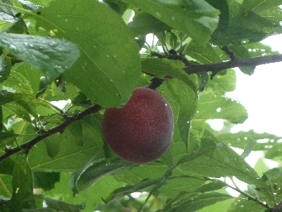
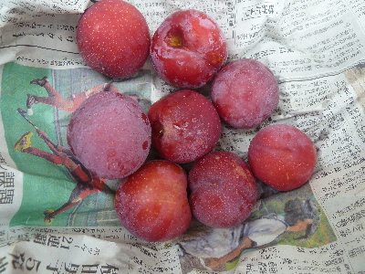
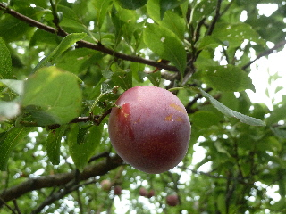
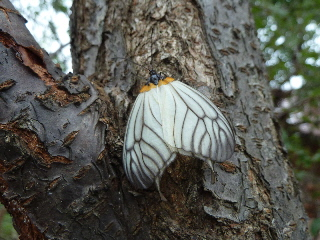
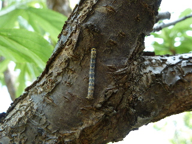
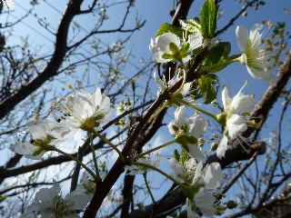

遊びで植物を育てよう
2016/07/03
スモモが熟れました。
いい色になったので収穫です。

今年はちょっと実が多いかな。

今日はこれだけ収獲しました。
【すももTOP】 【果物TOP】 【園芸TOP】
2015/07/11
すももが収穫時期になりました。
すももがいい色になりました。

完熟まで木につけてると、昆虫に食べられちゃうので早めに収穫します。
すももは果汁が多くて美味しいです。
【すももTOP】 【果物TOP】 【園芸TOP】
2013/09/28
すももに蛾が卵を！
ひらひら蛾がすももに飛んできました。

よく見てたら、卵を産み付けていました。
害虫ですね。きっと。
今の時期、この蛾を沢山見ます。
朝とかいっぱい飛んでる気がする。
【すももTOP】 【果物TOP】 【園芸TOP】
2013/04/28
すももに虫発生。
毛虫大量発生中です。

木の下が危険地帯になりました。
気を付けて歩きましょう。

象虫も歩いてました。
なんでスモモは虫に人気なんだろう？
【すももTOP】 【果物TOP】 【園芸TOP】
2013/03/23
すももの花が咲き出しました。
小さい花が沢山咲いてます。

小さすぎるし、葉っぱも出てるのであんまり目立たないです。
花がいっぱいだけど、何個が実になるのかなー？
【すももTOP】
【果物TOP】
【園芸TOP】
畑仕事じゃないよ。
【おいしいものを食べよう。】【しっかり寝よう。】
【ソロ活をしよう!】【季節感のあることをしよう。】【動画視聴はほどほどに。】【当サイトの全てのコンテンツは無断転載禁止です。】